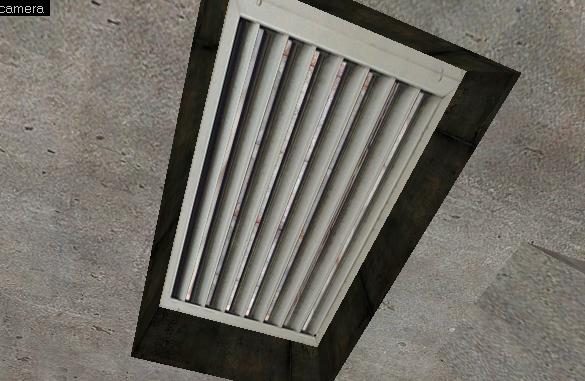
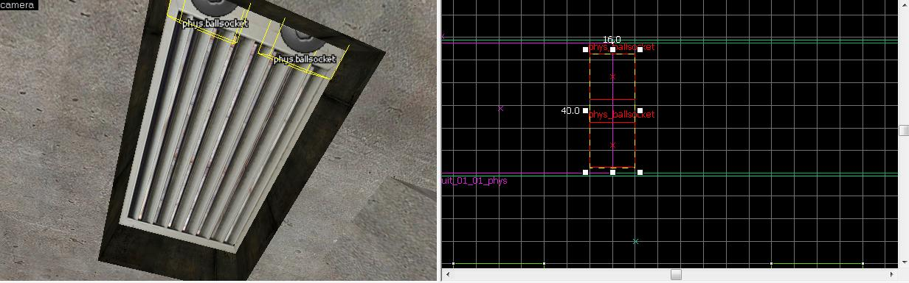

Bonjour à tous les Zéros. Nous allons aujourd'hui apprendre à créer une plaque d'aération qui devient physique lorsque l'on tire dessus, et en même temps apprendre à créer des charnières. :p
Alors c'est parti, faites chauffer Hammer 4 et préparez-vous. Nous allons commencer par créer une petite plaque de 46*79 (unités hammer). Je vous conseille d'utiliser la texture suivante avec ces configurations :
Texture : de_nuke/nuke_metalvent X : 20 Y : -197
N'oubliez pas de texturer les autres faces de la plaque, car étant physique, le joueur pourra voir toutes ses faces.
Vous devriez arriver à quelque chose comme ceci :

Maintenant, sélectionnez votre jolie plaque et transformez-la en entité-bloc. Il faut la transformer en func_physbox. Nous allons éditer ses propriétés.
Nommez-la, "plaque_01" par exemple. Allez ensuite dans ses outputs. Créez un output avec les options suivantes :
Output
Valeur
My Output Named
OnDamaged
Target Entities Named
plaque_01
Via this input
EnableMotion
Et nous terminons par ses flags, où vous devez cocher "MotionDisabled". Ce flag aura pour effet de rendre votre plaque non-physique au lancement de la map, il faut l'activer par un output, comme nous venons de le faire.
Vous êtes encore là ? C'est bon signe, cela veut dire que je n'explique pas trop mal. :lol:
Alors, nous allons maintenant apprendre à utiliser l'entité point phys_ballsocket.
phys_ballquoi ?
L'entité phys_ballsocket, un nom à dormir dehors sous la pluie. :p Cette entité sert en réalité à créer un point de rotation translatif, c'est une charnière, comme sur les portes (les vraies). Cette entité n'est pas présente dans beaucoup de maps, malgré son potentiel que je trouve énorme : imaginez que les portes dans CSS ne soient pas fixes mais que vous puissiez les pousser juste pour regarder derrière. Elle va nous servir pour notre plaque.
Et je la mets où ton entité, là ?
Il faut la mettre au niveau des charnières, comme sur l'image ci-dessous :

C'est bon ?
Bien, maintenant nous allons éditer les propriétés de nos chères phys_ballsocket.
Je vais vous expliquer comment la configurer dans notre cas et aussi comment la configurer en général. Dans notre cas...
Dans notre cas...
Il faut mettre le nom de notre plaque dans entity 1, plaque_01 entre autres.
Voilà, votre plaque est prête pour être canardée par vos soins. :D
Mais avant de conclure je vais vous expliquer comment utiliser l'entité phys_ballsocket en général.
En général...
Name : Je ne pense pas qu'il faille vous l'expliquer, si vous ne savez pas à quoi cela sert, je vous recommande de lire le tutoriel de Thunderseb pour Hammer 4 ;
Entity 1 : Vous devez mettre le nom de la première de votre entité avec laquelle vous voulez créer une charnière ;
Entity 2 : Vous devez mettre le nom de la seconde entité sur laquelle vous voulez une charnière ;
Constraint System Manager : Je ne vais pas vous l'expliquer ici car il utilise une autre entité ;
Force Limit to break (lbs) : C'est la force à laquelle les charnières doivent céder, mettez 0 si vous voulez qu'elles soient indestructibles ;
Torque limit to break : Ici, c'est "force*distance", mais en général nous n'utilisons pas cette option, 0 pour indestructible ;
Play sound on break : À part être anglophobe, cela devrait vous parler, mais je vais quand même vous traduire : "jouer un son lorsque l'entité casse".
Voyons les flags à présent.
No collisions until break : Indiquer si lorsque les charnières cassent il doit y avoir des collisions ou pas ;
Start inactive : Les phys_ballsocket ne sont pas activées au lancement de la map ;
Change mass to keep stable attachment to world : Change le poids de nos entités une fois stabilisées ;
Do not connect entities until turned on : Une fois les entités activées, les ballsocket se désactivent.
Voici le wiki de Valve, [ Wiki de Valve sur le phys_ballsocket ] il contient certainement plus d'informations que ce que je vous ai donné, mais je vous donne au moins une petite idée de la fonction de l'entité. Comme ça même les anglophobes y arriveront. :D
Voilà, ce mini-tuto est terminé, j'espère qu'il vous a plu et à la prochaine. :D
Voila, vous savez maintenant plus ou moins (malheur à ceux qui n'ont que survolé ce tuto :diable: ) manier le phys_ballsocket et le func_physbox. Et voila, c'est déjà fini ! :'(